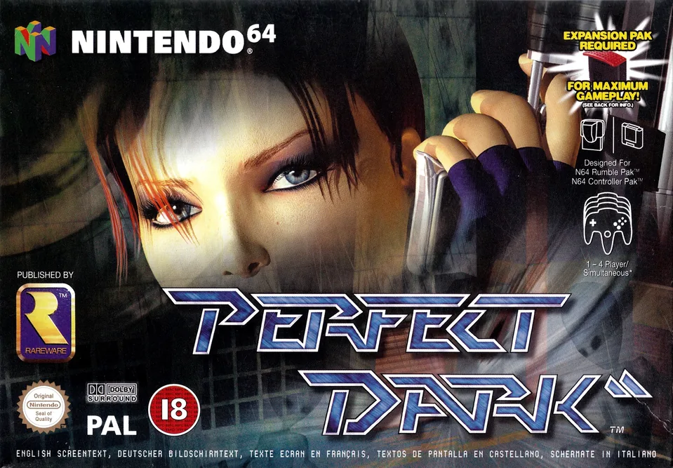
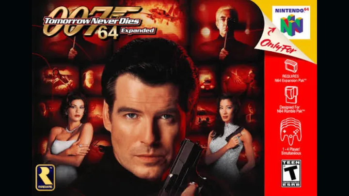

Latest patch · September 2026
PD6480iPerf
Perfect Dark in 480i, with the newer performance base.
Enter Perfect Dark Downloads & installationCyiatic’s home for 480i patches and game preservation.

Latest patch · September 2026
Perfect Dark in 480i, with the newer performance base.
Enter Perfect Dark Downloads & installation
Released · July 2026
Tomorrow Never Dies 64, presented in 480i.
Open the dossier Downloads & installationNew to the picture mode? Why 480i?
 Conker’s SkyboxesExplore seven recovered panoramas
Conker’s SkyboxesExplore seven recovered panoramas
Releases, experiments, and the work in between: Project timeline